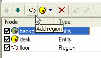
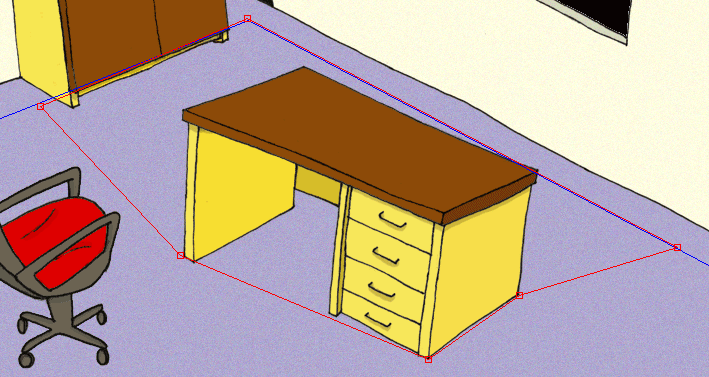
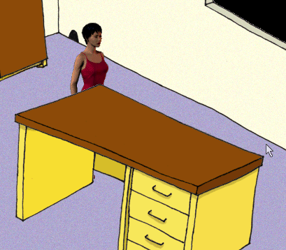
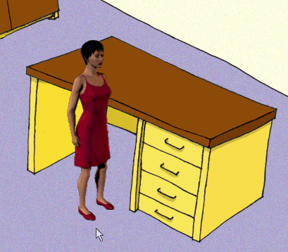

Tak jo, teï zaèíná ta správná zábava. Nauèíme se, jak funguje rozložení scény. V tuhle chvíli už víme, že poøadí prvkù scény je velice dùležité, protože oblivòuje zpùsob vykreslování obsahu scény, jak jsme si øekli v minulé kapitole.
Otevøete svou scénu "MyScene.scene" v programu SceneEdit.
Máme tedy dvì entity ("background" - pozadí a "desk" - stùl) a jeden region, po kterém mùže postava chodit ("floor" - podlaha). Potøebujeme dosáhnout toho, aby entita "desk" pøekrývala postavu jen tehdy, pokud postava stojí vzadu za stolem. Øešením je, pøidat do scény další region.
Kliknìte na tlaèítko "Add region" (Pøidat region). Bude pøidán nový prvek scény, pojmenovaný "new region".

Zmìòte jméno napøíklad na "behind_desk" (za stolem). Samozøejmì prvky scény mùžete pojmenovávat jak chcete, ale dbejte na vhodné pojmenování, abyste se ve složitìjších scénách vyznali.
Teï potøebujeme zmìnit tvar našeho nového regionu tak, aby pokrýval celou plochu podlahy, která je "za stolem". Upravte region tak, aby odpovídal tvaru na tomto obrázku:

Poslední vìc, kterou musíme udìlat, je správnì nastavit poøadí prvkù scény (použijte tlaèítka se zelenými šipkami pro pøesun prvkù nahoru a dolu):
Èeho jsme tím dosáhli? Herní engine bude nyní vykreslovat scénu tímto zpùsobem:
1) nejprve se vykreslí entita "background" (pozadí)
2) poté se vykreslí všechny postavy, stojící v regionu "behind_desk" (tedy za stolem)
3) pak se vykreslí entita "desk" (stùl)
4) a nakonec se vykreslí všechny postavy, stojící v regionu "floor" (podlaha)
Jinými slovy: pokud stojí postava v regionu "behind_desk", je vykreslena døíve než stùl (a je jím tedy pøekryta), jinak je vykreslena pozdìji než stùl, a pøekrýva tedy ona jej.
Zkuste si to sami. Uložte scénu, ukonèete SceneEdit a v programu ProjectMan kliknìte na tlaèítko "Run game" (Spustit hru). Vyberte položku "MyScene" a zkoušejte posílat postavu na rùzná místa scény. Mìla by správnì pøekrývat stùl a naopak, podle toho, zda stojí za ním nebo pøed ním. Prozatím budeme ignorovat skuteènost, že postava mùže projít skrz stùl. Tento problém vyøešíme v kapitole Krok 4: Blokované regiony.


Doufám, že byla tato kapitola dostateènì srozumitelná. Jedná se o nejsložitìjší èást této výuky, zbytek už bude jednoduchý :-) Ujistìte se, že dobøe chápete dùležitost správného øazení prvkù scény.